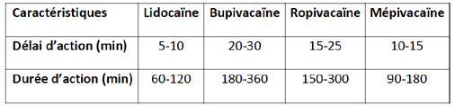
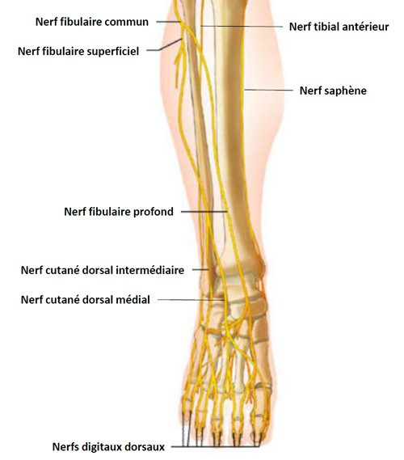
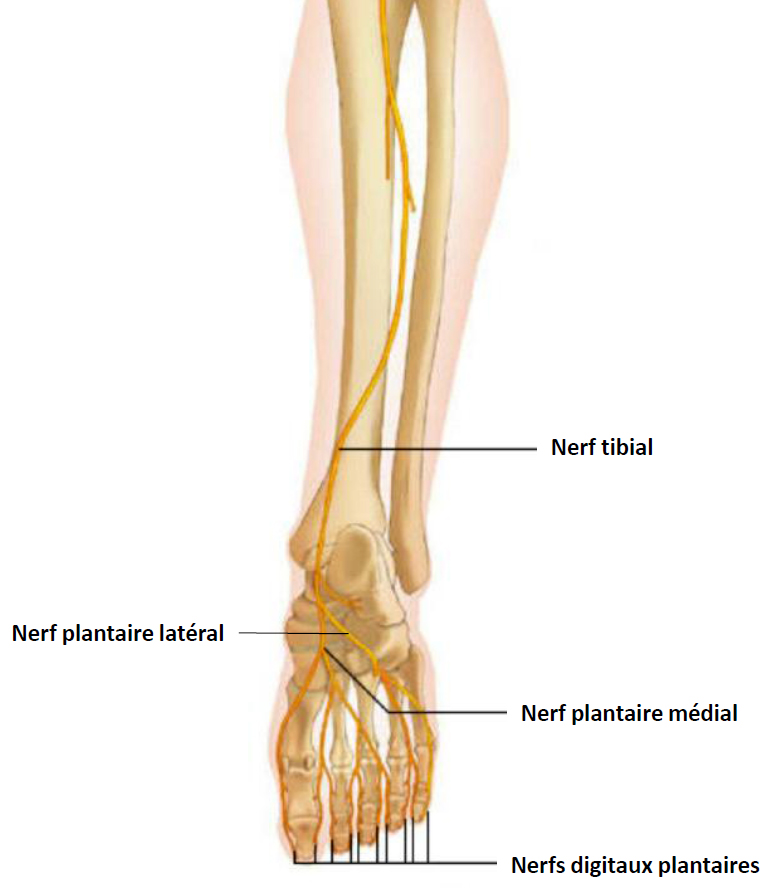
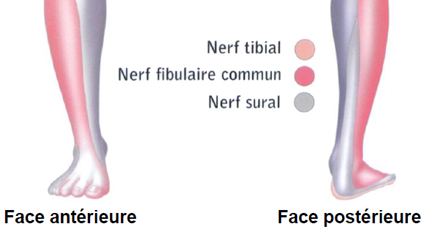

Blocs périphériques du pied
AdulteSpécialité : traumatologie /
Points importants
- L'ALR consiste à bloquer la transmission de l'influx nerveux en injectant un AL à proximité des troncs nerveux innervant un territoire concerné
-
Il faut distinguer les blocs plexiques des blocs tronculaires :
- les blocs plexiques intéressent l'ensemble des nerfs d'un membre (non indiqués dans l’urgence)
- les blocs tronculaires se focalisent sur l’anesthésie d’un nerf périphérique
- Indiqués seulement pour des monotraumatismes
- Ces blocs permettent une analgésie rapide, sans effets secondaires systémiques
- Importance de l’entraînement à la pratique de ces techniques
- L’adrénaline ne doit pas être un additif aux blocs des extrémités (par son effet vasoconstricteur. Risque d’ischémie)
Indications
- Blocs distaux de la cheville
- Parage de plaies de l’avant-pied et plantaires
-
Réduction et immobilisation de fractures :
- fractures de l’avant-pied (métatarsiens)
- réduction de luxations au niveau des orteils
- Extractions de dendrites d’oursins
- Analgésie post-piqûres de venimeux (vives, méduses…)
Contre-indications
- Foyer infectieux local
- Traitement anticoagulant et troubles de l’hémostase (CI relatives)
- Hématome modifiant les repères anatomiques
- Agitation
- Patient inconscient
- Refus du patient (ou des parents si patient mineur)
- Praticien insuffisamment compétent
-
Contre-indications dues aux AL :
- allergie aux AL
- porphyries
- troubles de la conduction intracardiaque
- épilepsie non contrôlée
- ATCD d'hyperthermie maligne
- Impossibilité pour le patient de se mettre en décubitus dorsal
- Détresse vitale
Présentation du matériel
-
Anesthésiques locaux non adrénalinés (lidocaïne à 1% ou 2%, naropéine à 2 mg/mL ou 7,5 mg/mL, carbocaïne à 20 mg/mL)
-  fichier_905 Tableau Caractéristique des AL de type amino-amides
- pas de différence notable entre la lidocaïne et la carbocaïne si ce n'est une infiltration moins douloureuse avec cette dernière
- la naropéine a une durée d'action (6-8 heures) beaucoup plus longue que la lidocaïne (1-2 heures) et a moins d'effets secondaires
-
Aiguilles de 21 à 23 G, de longueur adaptée selon le siège anatomique du nerf :
- les aiguilles standard à biseau long (30°) peuvent entraîner une agressivité sur les structures vasculo-nerveuses
- les aiguilles à biseau court (45°) permettent de mieux sentir le passage des plans pour les blocs profonds
- Seringues (5 mL)
- Antiseptique
- Compresses stériles
- Gants
Description de la technique
Anatomie
-
Le plexus sacré est à l'origine de sept nerfs : six branches collatérales et une terminale, le nerf sciatique, qui se divise en deux branches :
- le nerf tibial descend le long de la jambe et passe en arrière de la malléole interne ; il se divise en nerfs plantaires médial et latéral ; le nerf sural est également une branche du nerf tibial ; il aborde le pied en arrière de la malléole externe et innerve le bord externe du pied
- le nerf fibulaire commun qui donne les nerfs fibulaires superficiel et profond : ils innervent la face dorsale du pied
 fichier_901 Innervation du pied (face antérieure)
 fichier_902 Innervation du pied (face postérieure)
 fichier_904 Sensibilité du pied
Technique
- Pour induire une analgésie du pied, il faut endormir 5 nerfs. Ceux-ci dépendent tous du territoire sciatique
-
Trois nerfs sont superficiels (bloqués par des injections sous-cutanées) :
- le saphène interne (en avant de la malléole interne)
- le fibulaire superficiel (en dehors du tendon de l'extenseur propre du gros orteil)
- le saphène externe (en arrière de la malléole externe)
-
Les deux autres sont plus profonds :
- le tibial postérieur (en arrière de la malléole interne)
- le fibulaire profond (très proche du fibulaire superficiel)
- Patient en décubitus dorsal
- Badigeonner la zone de ponction avec la solution antiseptique
- 2 à 3 mL de lidocaïne non adrénalinée à l% suffisent pour chaque nerf
- Toujours bien stabiliser le membre afin d’éviter tout risque de mobilisation intempestive pendant le geste
fichier_889 fichier_889 - - - Blocs du pied : généralités
Bloc du saphène interne
fichier_890 fichier_890 - - - Bloc du saphène interne
- Analgésie : langue cutanée allant de la malléole interne jusqu'au medio-pied
- La jambe est allongée en légère rotation externe, l'axe du pied étant positionné à 45° par rapport au plan de la table
- Prendre 5 mL de lidocaïne à 1 % dans une seringue (généralement, 3 à 4 mL suffisent par nerf)
- Connecter une aiguille à IM
- Partir du tendon du long extenseur du pouce repéré en faisant bouger le gros orteil
- Infiltrer en sous-cutané en évitant de ponctionner la veine saphène interne
- Enfoncer l'aiguille sur un plan transversal jusqu'à la garde pour atteindre la région sus-malléolaire interne
- Aspirer puis injecter mL par mL de façon régulière en retirant progressivement l'aiguille (maximum 2-3 mL). On voit apparaître un gonflement sous-cutané traduisant la bonne position de l'aiguille
Blocs des nerfs fibulaires superficiel et profond
-
Repères :
- la jambe est allongée, le pied en position anatomique
- le point de ponction se situe à la face antérieure de la cheville, exactement au même endroit que pour le bloc du saphène interne (tendon du long extenseur du pouce repéré en faisant bouger le gros orteil)
- les repères cutanés sont le tendon extenseur du muscle tibial antérieur mis en évidence par une flexion dorsale du pied contre résistance, et le tendon du long extenseur de l'hallux repéré après extension de l'hallux contre résistance
- le point de ponction se situe dans la gouttière entre les deux tendons, à l'intersection avec la ligne unissant les deux malléoles
-
Bloc du nerf fibulaire superficiel :
- analgésie : toute la région dorsale du pied
- enfoncer l'aiguille en sous-cutané sur un plan transversal, en évitant toute ponction veineuse superficielle, en allant jusqu'à la garde au niveau de la région sus-malléolaire externe
- aspirer puis injecter ml par ml de façon régulière en retirant progressivement l'aiguille (maximum 2-3 ml). On voit apparaître un gonflement sous-cutané traduisant la bonne position de l'aiguille.
fichier_891 fichier_891 - - - Bloc du nerf fibulaire superficiel
-
Bloc du nerf fibulaire profond :
- ce nerf est sous-apronévrotique
- il chemine le long de l'artère pédieuse. On le repère donc en palpant les battements de cette artère (en dehors du tendon extenseur de l'hallux et en dedans du tendon de l'extenseur commun)
- piquer avec une aiguille à intramusculaire, juste en dedans de l'artère pédieuse, perpendiculairement au plan cutané, vers le talon ; le franchissement de l'aponévrose est ressenti par un petit ressaut
- enfoncer l'aiguille jusqu'au contact osseux (cuboïde) puis reculer d'environ 1 mm
- connecter la seringue de 5 mL préalablement remplie de lidocaïne à 1 %
- aspirer afin de s'assurer de l’absence de reflux sanguin
- injecter doucement 3 mL d'AL en sous-aponévrotique
fichier_892 fichier_892 - - - Bloc du nerf fibulaire profond
L'anesthésie combinée des nerfs saphène interne, fibulaires superficiel et profond, permet d'induire une analgésie de toute la face dorsale du pied.
Bloc du tibial postérieur
- Il chemine à la face postérieure du tibia avec le pédicule vasculaire (artère, tendon fléchisseur de l'hallux, tendon fléchisseur commun)
- Il est sous-aponévrotique
- Il réalise l'anesthésie de toute la face plantaire du pied grâce à ses deux branches (plantaire médial, plantaire latéral) ainsi que du calcanéum (rameau calcanéen)
- Prendre 5 mL de lidocaïne à 1 % dans une seringue
- Connecter une aiguille à IM.
- Le point de ponction est pré-achilléen, au bord médial du tendon d'Achille. La direction de l'aiguille est sagittale vers la malléole interne
- L'aiguille traverse l'aponévrose puis vient buter sur la malléole
- Vérifier l'absence de reflux vasculaire par aspiration
- Injecter 3 à 4 mL d'AL
- Lors de l'injection, il ne doit pas y avoir de gonflement sous-cutané puisque l'extrémité de l'aiguille est sous-aponévrotique
fichier_893 fichier_893 - - - Blocs du nerf tibial postérieur
Bloc du saphène externe
- La jambe est allongée, en rotation interne, l'axe du pied à 45°.
- Prendre 5 mL de lidocaïne à 1 % dans une seringue
- Connecter une aiguille à intramusculaire
- Le point de ponction est pré-achilléen, au bord latéral du tendon d'Achille. La direction de l'aiguille est sagittale vers la malléole externe
- La différence avec le bloc tibial postérieur est que l'aiguille doit rester sous-cutanée jusqu'à la butée malléolaire externe
- Retirer progressivement l’aiguille en aspirant et en injectant régulièrement l'AL. Un gonflement sous-cutané progressif doit être visualisé
fichier_894 fichier_894 - - - Blocs du saphène externe
Blocs digitaux
- Indiqués pour des traumatismes très localisés d'un orteil
- Quatre nerfs innervent chacun des orteils (2 nerfs digitaux antérieurs superficiels médial et latéral ; 2 nerfs digitaux postérieurs médial et latéral)
- Prendre 5 mL de lidocaïne à 1 % dans une seringue
- Connecter une aiguille à IM
- Les points de ponction sont à la base des orteils
- Enfoncer l'aiguille d'environ 2 mm perpendiculairement au plan cutané, latéralement à la phalange, au niveau de chacun des 4 points de ponction antérieurs et postérieurs
- Aspirer puis injecter environ 1,5 mL d'AL
fichier_895 fichier_895 - - - Bloc digital du pied
Précautions d’emploi
- Nécessité du consentement éclairé du patient
- Obligation d’un examen clinique préalable global et surtout loco-régional, à la recherche de troubles sensitivo-moteurs, d’une lésion préexistante
- Installation du patient en décubitus afin de réduire le risque de survenue d'un malaise vagal
- Pose préalable d'une VVP
- Monitorage (scope, SpO2, PA)
- Matériel de réanimation prêt (aspiration, BAVU, oxygène, drogues)
- Asepsie rigoureuse
- Respecter les doses d'AL
- Répéter les tests d'aspiration durant l'injection d'AL
- Maintenir en permanence un contact verbal avec le patient
- Privilégier les aiguilles à biseau court
-
Arrêter immédiatement toute injection si :
- douleur
- reflux de sang lors d’une aspiration
- résistance inhabituelle en cours d'injection
- symptômes dus à la toxicité systémique des AL
- Ne réaliser qu’une seule injection (en cas d’échec après injection, ne pas renouveler la tentative)
- Immobiliser le membre après la réalisation du bloc
- Evaluer l’intensité douloureuse avant et après la réalisation de l'ALR
- Faire un examen neurologique avant et après le geste et le noter dans le dossier
-
Diminuer les doses d'AL si :
- âge extrême : chez le sujet âgé (demi-vie d'élimination plus longue), le nouveau-né et le nourrisson (taux d'orosomucoïde faible jusqu'à 9 mois)
-
grossesse :
- augmentation de l'absorption par majoration du débit cardiaque
- la progestérone augmente la sensibilité des neurones à l'action des AL
- le taux d'orosomucoïde est diminué
- insuffisances cardiaque, hépatique et rénale
Complications
-
Complications traumatiques entraînant des complications neurologiques (prévalence = 1 à 1,5%) allant de dysesthésies temporaires aux parésies définitives (privilégier les biseaux courts) :
- mécaniques par lésion directe du nerf (douleur violente)
- compression interne (injection dans la gaine) ou externe (hématome péri-neuronal) du nerf
- Complications infectieuses (importance de l’asepsie)
- Hématome
-
Toxicité systémique des AL (injection intra-vasculaire) :
-
neurologique :
- engourdissement ou paresthésies péribuccales
- goût métallique dans la bouche
- étourdissement ou vertiges
- acouphènes
- troubles de l'accommodation visuelle, diplopie
- désorientation temporo-spatiale
- dysarthrie
- convulsions généralisées
-
cardiovasculaire :
- arythmies (TV, torsades de pointes, bradycardie extrême)
- HoTA
- arrêt cardiaque
- méthémoglobinémie
- porphyrie
-
neurologique :
- Syncope vagale (vertige, bradycardie, HoTA, nausées, pâleur, sueurs) secondaire à la douleur ou l’angoisse
Surveillance
- Scope
- PA, FC, SpO2
Bibliographie
- Société Française d'Anesthésie et de Réanimation, Société francophone de médecine d'urgence, SAMU de France. Pratique des anesthésies locales et locorégionales par des médecins non spécialisés en anesthésie-réanimation dans le cadre des urgences. Paris : SFAR / Elsevier; 2004, 107p.
- A. Fève. Pratique des anesthésies locorégionales par les médecins urgentistes non anesthésistes-réanimateurs en situation d'urgence en Lorraine. Thèse de Doctorat en Médecine. Faculté de Médecine de Nancy. 2009
Auteur(s) : Luc EYROLLE, Anissa BELBACHIR